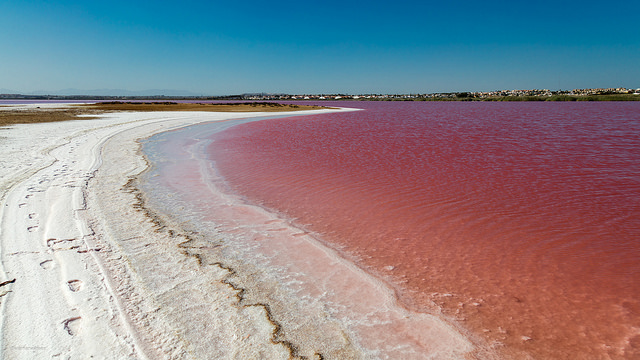
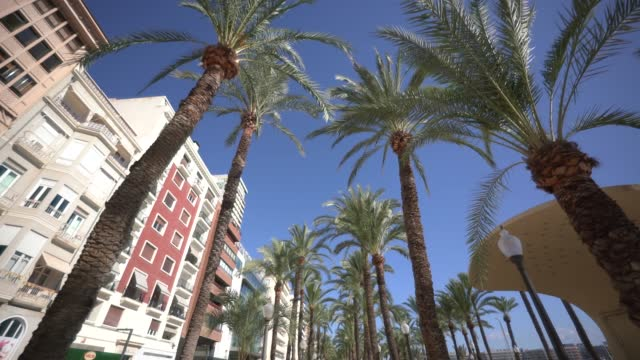
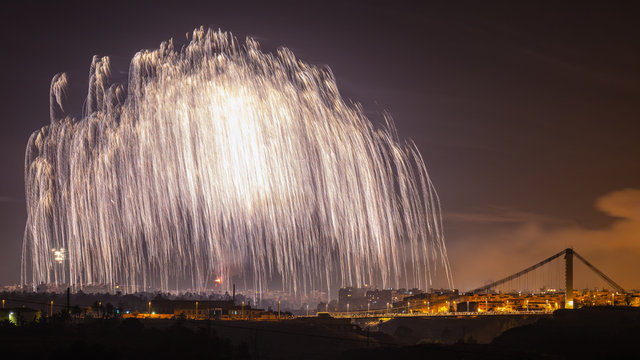
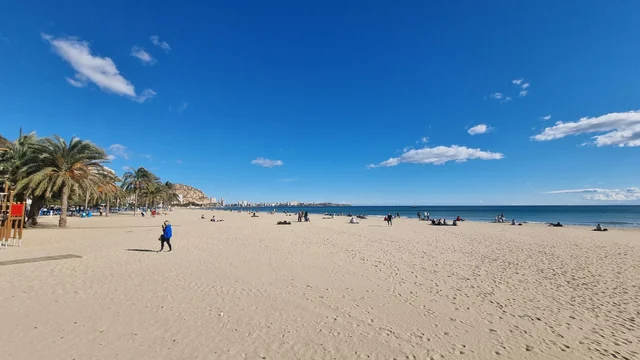
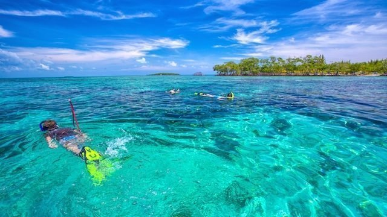
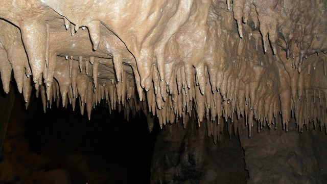

Ontdek de Betoverende Bezienswaardigheden van Alicante!
Pink Salt Lake
Nieuwsgierig naar het roze zoutmeer van Alicante? Ontdek hier de pracht van dit unieke natuurverschijnsel!
Ik heb afgelopen zomer dit prachtige roze zoutmeer in Alicante bezocht. Het is echt fantastisch mooi! Veel mensen vragen zich af, hoe komt het aan die mooie roze gloed/kleur? Dit wordt veroorzaakt door mineralen en algen. Ik kon niet geloven hoe helder en mooi het water eruitzag toen ik aankwam bij het zoutmeer. Het zoutmeer staat ook bekend om zijn geneeskrachtige eigenschappen. Veel mensen wrijven dan ook een beetje zout/modder op hun gezicht en lichaam. Zelf heb ik dit ook uitgeprobeerd. Het voelt een beetje vies maar wel enorm verfrissend. Het roze zoutmeer trekt niet alleen mensen aan, maar ook prachtige flamingo's. Dit ziet er enorm vet uit door het roze contrast. Het was een geweldige ervaring en ik raad het zeker aan aan iedereen die Alicante bezoekt!
Alicante Stad
Ontdek hier de mooie stad Alicante en laat je verrassen door de levendige cultuur en prachtige bezienswaardigheden!
Ik liep door de smalle straatjes en ontdekte veel verborgen maar erg gezellige pleintjes met restaurants en cafés. De Spaanse cultuur is overal zichtbaar, bijvoorbeeld bij de vele Spaanse vlaggen in de stad, de heerlijke tapas en de lokale gerechten. Mijn hoogtepunt was toch wel het kasteel van Santa Bárbara. Ik ben helemaal naar boven geklommen en heb daar genoten van het adembenemende uitzicht over de hele stad en de Middellandse Zee. Zeker de moeite waard dus! Ook zijn er in Alicante stad veel mooie terrasjes en stranden te vinden. De zon, het zand en de zee maakten mijn dag compleet. Ik kan niet wachten om weer terug te gaan...
Vuurwerkshow Elche
Ontdek hier dejaarlijkse vuurwerkshow in Elche en laat je betoveren door de spectaculaire lichtshow!
Ik kan met trots zeggen dat ik de jaarlijkse vuurwerkshow in Elche heb meegemaakt, het was absoluut magisch! Elk jaar verlicht deze prachtige vuurwerkshow de hele stad Elche en brengt het mensen vanuit heel Spanje samen. De lucht wordt gevuld met duizenden kilo's vuurwerk. Hierbij gaat het vooral om siervuurwerk, maar ook knalvuurwerk is inbegrepen. Het was echt de mooiste vuurwerkshow die ik ooit heb mogen meemaken. Wat deze vuurwerkshow zo bijzonder maakt, is dat de hele stad en omliggende steden er elk jaar naar uitkijken. Om 00:00 wordt er namelijk een vuurwerkshow gegeven waarbij in 10 seconden tijd 10.000 vuurpijlen tegelijk de lucht in gaan vanaf de kerk. Dit is een heel magisch en bijzonder moment. Kortom, de jaarlijkse vuurwerkshow in Elche was een onvergetelijke ervaring. Ik ben zo blij dat ik dit mocht meemaken!
Stranden
Hou je van zonnen op het strand en zwemmen in een prachtige zee? Ontdek dan hier de vele stranden van Alicante!
Tijdens mijn verblijf in Alicante heb ik veel tijd doorgebracht op de prachtige stranden. Het was puur genieten. De zon scheen altijd en de zee was helderblauw. Eerst ben ik naar Playa del Postiguet geweest, dat is een strand naast de stad. Het schone zand en het heldere water maakten het echt perfect. Later ben ik naar Playa de San Juan geweest. Dit is het populairste strand in de omgeving. Het strand strekt zich kilometers uit met veel zwemruimte. Tijdens het zwemmen in de zee had je ook een prachtig uitzicht op de omliggende bergen. Het was een heerlijk avontuur dat ik zo weer zou beleven. Ik raad deze stranden zeker aan!
Snorkelen
Ontdek hier de betoverende onderwaterwereld van Alicante tijdens een ontspannen snorkelavontuur!
Ik deel graag mijn mooie ervaring van het snorkelen in Alicante. Het was zelfs beter dan ik me had kunnen voorstellen. Alicante heeft niet alleen prachtige stranden, maar ook een geweldige onderwaterwereld. Het water van de Middellandse Zee was heel helder, waardoor je elke vis kon zien zwemmen. Het waren prachtige kleurrijke vissen. Het voelde echt als een tropisch aquarium waar je in zwemt. De gidsen vertelden interessante verhalen en weetjes over de vissen die we tegenkwamen. Een van de hoogtepunten was het spotten van een schildpad die rustig voorbijzwom. Het was een bijzonder moment. Kortom, als je naar Alicante komt, raad ik zeker aan om te gaan snorkelen. Het is een avontuurlijke en prachtige ervaring die je de vissen van de Middellandse Zee laat ontdekken. Mis deze kans niet!
Grotrondleiding
Ontdek de geheimen van Alicante's verborgen schatten tijdens een onvergetelijke grotverkenning!
Ik heb een geweldige ervaring gehad tijdens de grottenverkenning. Het was echt een bijzondere ervaring. Alicante heeft niet alleen prachtige stranden, maar ook een bijzonder mooie ondergrondse wereld waar nog veel te ontdekken valt. De rondleiding begon met het verkennen van de Cueva del Canelobre. Dit is een van de grootste en indrukwekkendste grotten in Spanje. Er waren enorme stalagmieten die duizenden jaren oud zijn. Het voelde echt alsof je een paradijs onder de grond binnenstapte. De gidsen vertelden veel over de geschiedenis en hun bijzondere ervaringen. Kortom, de grottenverkenning in Alicante is een absolute aanrader voor iedereen die de stad bezoekt. Het biedt een kans om een verborgen wereld te verkennen met een rijke geschiedenis en schoonheid. Mis deze unieke ervaring niet als je in Alicante bent!